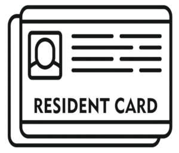

CITTADINANZA ITALIANA
Che cos’è la cittadinanza italiana?
Il termine cittadinanza indica il riconoscimento, da parte dello Stato, dei diritti civici e politici a un
cittadino.
La cittadinanza italiana può essere concessa / ottenuta:
- iure sanguinis cioè se si nasce o si è adottati da cittadini italiani;
- allo/a straniero/a che ha prestato servizio, anche all'estero, per almeno 5 anni alle dipendenze dello
Stato;
- al cittadino/a di uno Stato membro delle Comunità europee se risiede legalmente da almeno 4 anni nel
territorio della Repubblica;
- all'apolide che risiede legalmente da almeno 5 anni nel territorio della Repubblica;
- allo/a straniero/a che risiede legalmente da almeno 5 anni nel territorio della Repubblica;
- allo/a straniero/a che ha sposato un/una cittadino/a italiano/a da almeno 2 anni
Chi può effettuare la richiesta di cittadinanza italiana per residenza?
La cittadinanza può essere richiesta dagli stranieri che risiedono in Italia da almeno 10 anni (4 anni in
caso di cittadino comunitario) e sono in possesso di determinati requisiti.
Quali sono i requisiti per effettuare la domanda di cittadinanza per residenza?
La domanda può essere effettuata da tutti coloro che risiedono legalmente in Italia da almeno 10 anni e che
rispettano il seguente requisito economico a livello personale o familiare:
euro 8.263,31 per richiedenti senza persone a carico;
euro 11.362,05 per richiedenti con coniuge a carico
Più euro 516,00 per ogni ulteriore persona a carico.
Il reddito da considerare è quello relativo ai tre anni antecedenti alla domanda di cittadinanza e l'importo
è annuo.
Inoltre per l'accettazione della domanda è previsto anche un criterio di "buona condotta" e cioè l'assenza
di precedenti penali e carichi pendenti, sia in Italia che in qualsiasi altro Stato.
Quali sono i documenti ed informazioni necessari per effettuare la domanda di cittadinanza per residenza?
I documenti e le informazioni necessarie per effettuare la domanda sono:
SPID (se non l'hai ancora attivato, richiedi il servizio SPID Online)
Attestato di conoscenza di Lingua Italiana B1 (esonerato in caso di Permesso di soggiorno per lungo periodo
CE)
Atto di nascita ( tradotto e legalizzato del paese di origine)
Certificato penale (tradotto e legalizzato del paese di origine rilasciato non oltre i 6 mesi precedenti
alla domanda)
Certificato o autocertificazione delle Stato di famiglia.
Il modulo di autocertificazione sarà disponibile subito dopo l'acquisto
Certificato o autocertificazione di residenza per 10 anni consecutivi (il modulo di autocertificazione
disponibile dopo l'acquisto)
Copia Marca da bollo 16,00€
Copia passaporto in corso di validità
Copia fronte / retro carta d’identità
Copia codice fiscale
Copia permesso di soggiorno
Copia del versamento del contributo di 250€ sul c/c n.809020 intestato a: Ministero Interno D.L.C.I.
cittadinanza – con la causale: cittadinanza – contributo di cui all’art. 1 co. 12, legge 15 luglio 2009 n.
94
CUD o 730 o Unico per 3 ultimi anni
Questionario di cittadinanza (disponibile dopo l'acquisto)